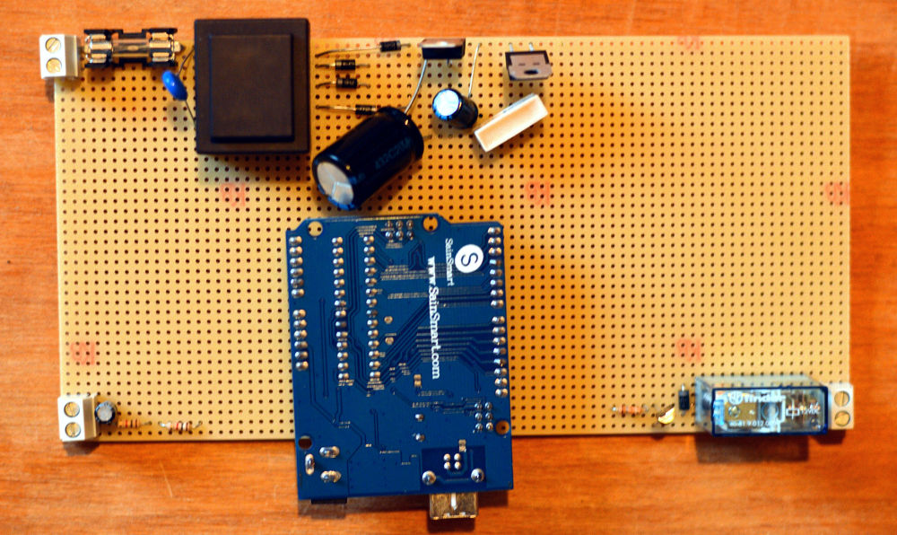
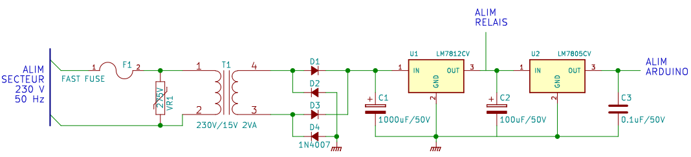
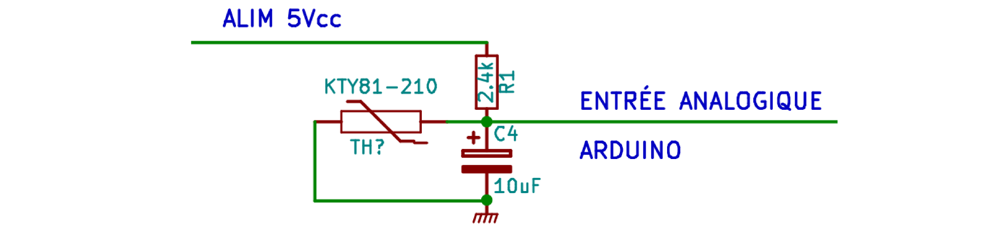
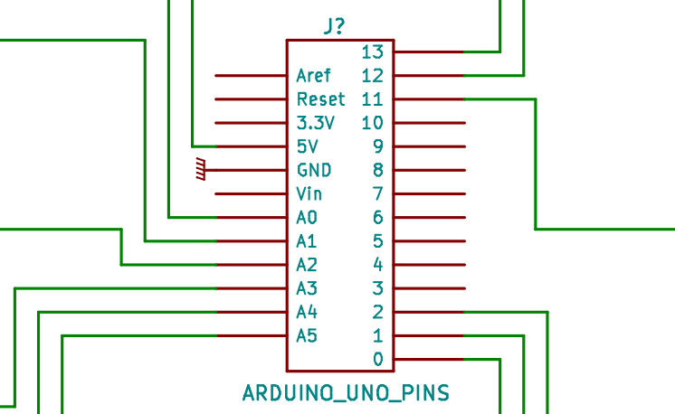

Le Solarduino : une régulation open-source
À quoi sert une régulation ?
Le régulateur est indispensable. Sans lui, le circulateur fonctionnerait en permanence. C'est-à-dire que la chaleur accumulée dans le ballon de stockage serait dissipée dans les capteurs durant la nuit où pendant un épisode nuageux.
-

Figure : Schéma d'un SST controlé par une régulation.
Le régulateur doit enclencher le fonctionnement du circulateur lorsque la différence de température entre le fluide en sortie du champ de capteurs et l'eau dans le ballon de stockage est suffisante pour qu'il y ait un échange thermique efficace (en général, on prend une différence de température égale à 10°C), d'où le nom de régulation différentielle. Il faut aussi que le régulateur prenne en compte un hystérésis (c'est-à-dire qu'il attend que la température diminue jusqu'à 5°C environ avant de relancer le circulateur) pour que le circulateur ne soit pas arrêté et remis en marche trop souvent.
Au delà de ce principe de base, une régulation doit prendre en compte plusieurs autres paramètres, surtout lorsque le système se complexifie : plusieurs champs de capteurs, plusieurs cumulus, des planchers solaires directs, etc..
Le Solarduino
- 
Figure : premier prototype du Solarduino soudé sur une plaque à pastilles.
Nous avons développé une régulation open-source, peu coûteuse qui permet de remplacer les régulations propriétaires du commerce : le Solarduino. Basée sur le travail de Bioulez (2012), elle se place en complément d'une autre régulation open-source créée par Nies (2009) : le Minisun.
Voici un tableau comparant le Solarduino à une partie des régulations existantes. Les prix prennent en compte deux sondes de température et sont basés sur le groupement d'achat de l'APPER, disponible ici.
| Nom | Coût | Nb. de sondes | Nb. de relais | Régulation d'une chaudièreexterne | Program-mable | Open-Source | Référence |
|---|---|---|---|---|---|---|---|
| MINISUN | 45 € | 2 | 1 | non | non | oui | lien |
| SOLARDUINO | 85 € | 6 | 6 | oui | oui | oui | ce site |
| PICO 400 | 90 € | 2 | 1 | non | non | non | lien |
| BASIC | 130 € | 2 | 1 | non | non | non | lien |
| VISION+ | 215 € | 6 | 3 | oui | non | non | lien |
| GENIUS+ | 385 € | 9 | 6 | oui | oui | non | lien |
| MILLENIUM3 | 625 € | 12 | 8 | oui | oui | non | voir note [1] |
Le schéma
Voici le schéma électronique du Solarduino. Il y a quatre parties distinctes dans le système :
- L'alimentation permet de fournir une tension stable aux trois autres parties. Elle fournit deux tensions : 12 Vcc (volts en courant continu) et 5 Vcc.
- L'interface des sondes permet d'utiliser des sondes de température classiques : des KTY81-210. Ces sondes sont des compsants dont la résistance varie avec la température. Plus il fait chaud, plus leur résistance augmente. En la mesurant, on peut donc connaitre la température du milieu dans lequel les sondes sont positionnées.
- La commande des relais permet d'utiliser des.. relais. Les relais sont des interrupteur commandables. Lorsque l'arduino donne l'ordre de mettre en route un circulateur ou de modifier la position d'une vanne trois voies, l'un des relais ferme le circuit correspondant.
- L'arduino est un microcontrolleur open-source. Ses plans de fabrication sont disponibles ici. Son principe de fonctionnement est le suivant : on commence par le brancher à un ordinateur. À partir de cet ordinateur, on lui transfère un code. On débranche ensuite l'arduino pour le mettre en place. Une fois allumé, l'arduino exécute en boucle le code qui a été transféré. On peut ainsi lui faire exécuter des taches complexes à notre place.

Les choix constructifs
L'alimentation
Calcul et choix des composants :
- Le fusible et la varistance : Le circuit est protégé des sur-intensités grâce au fusible et la varistance le protège des sur-tensions. Il faut choisir un fusible de type rapide pour qu'il grille avant le reste du circuit en cas de sur-intensité.
- Le transformateur : Il a été choisi pour obtenir du \(15 Vca\) soit, en amplitude \(15\sqrt{2}V\) . En effet, le régulateur de tension à besoin d'une tension supérieure à sa tension de régulation pour pouvoir fonctionner correctement. Les données constructeur indiquent \(V_{min}=14.5V\) . Ensuite, le pont de diode redresse le signal de sorte qu'il double sa fréquence \(f=50Hz\) et les diodes provoquent une chute de tension de \(1.4V\) . L'amplitude maximale du signal arrivant aux bornes du condensateur vaut donc \(V_{in}=15\sqrt{2}-1.4\)
- La capacité réservoir : pour que la tension aux bornes du régulateur ne diminue pas en dessous de \(V_{min}\) , il faut choisir la capacitance \(C_{1}\) telle que : \(C_{1}=I_{max}/2f(V_{in}-V_{min})\) soit \(C_{1}=700\mu F\) . En pratique, le condensateur choisi est de type électrolytique et possède une capacitance de \(1000\mu F\) pouvant fonctionner jusqu'à 50 Vcc.
- Le régulateur de tension 12 Vcc : le régulateur choisi est de type L7812CV parce qu'il supporte des courant allant jusqu'à 1.5 A, ce qui suffit largement ici.
- Contrairement à la solution de Bioulez (2013), il a été choisi de ne pas utiliser un régulateur de tension 9 Vcc, mais de mettre à la place un régulateur 5 Vcc et d'alimenter directement l'arduino sans passer par son régulateur interne. En effet, le courant maximal consommé par l'arduino est de \(I_{max}=60mA\) donc la puissance d'échauffement vaut \(P_{\acute{e}chauff}=(9-5)*I_{max}\) soit \(P_{\acute{e}chauff}=420mW\) . Or, d'après les données constructeur, la résistance thermique du régulateur interne de l'arduino vaut 160 °C/W donc celui ci s'échauffera de 21°C. C'est acceptable pour une carte de prototypage, mais dans l'optique de créer une carte robuste, il vaut mieux limiter l'échauffement des composants. De plus, ce changement ne rajoute aucun surcoût.
- Les condensateurs de filtrage : les données constructeur indiquent l'utilisation d'un condensateur de capacitance \(C_{3}=0.1\mu F\) pour lisser les oscillation en sortie du régulateur. Un condensateur \(C_{2}=100\mu F\) a aussi été rajouté en entrée pour atténuer les fluctuations liées aux relais.
L'interface des sondes
- 
Calcul et choix des composants :
- Les sondes : on utilise des sondes de type KTY81-210 parce qu'elles ont une bonne sensiblilité aux variations de température. Les données constructeur indiquent qu'elles sont utilisables entre -55°C et 150°C et qu'entre ces deux valeurs leur résistance varie entre \(980\Omega\) et \(4280\Omega\)
- Le condensateur \(C_{i}\) : il permet de réaliser un filtre passe-bas avec la résistance \(R_{3}\). La constante de temps de ce filtre vaut \(\tau=R_{i}C_{i}=0.024s\) soit une fréquence de coupure égale à \(f_{c}=\tfrac{1}{2\pi R_{i} C_{i}}=6.6 Hz\). Ainsi, toutes les fréquences supérieures à \(f_{c}\) seront atténuées.
- La résistance \(R_{i}\) : Celle-ci permet de réaliser un pont diviseur de tension tel que la tension mesurée par l'arduino \(V_{analog}\) corresponde à \(V_{analog}=\frac{R_{sonde}}{R_{sonde}+R_{i}}\), d'où \(V_{analog} \in [1.45 ; 3.20 V]\) pour \(R_{i}=2,4k\Omega\). On obtient ainsi une plage de variation de 1,75V. Les ports de mesure de l'arduino acceptent des tensions entre 0 et 5 Vcc qu'ils transforment en 1024 points (10 bits). Ainsi, les 205 °C de variation permises par les sondes sont codées sur 358 bits, d'où une précision de 0,6°C/bit.
La commande des relais
Calcul et choix des composants :
- Les relais : ce sont des interrupteurs commandés. On utilise des relais Finder de type 40.61 parce qu'ils sont commandables en 12 Vcc et qu'on peut les utiliser dans un circuit de puissance sous 230 Vca et 16A. C'est très largement suffisant pour controler le fonctionnement d'un circulateur ou d'une vanne 3 voies. Ils possèdent une résistance interne de \(R_{relais} = 220\Omega\) et demandent une puissance minimale de 500 mW pour être commandés.
- Le transistor et la résistance \(R_{i}\) : d'après les données constructeur, les sorties de l'arduino peuvent fournir \(I_{max} = 40 mA\) sous 5 V, soit 200 mW de puissance. Il est donc impossible pour ces sortie de commander un relais sans être amplifiées. Un transistor peut être utilisé pour amplifier la puissance de ces sorties. Si on note \(I_{c}\) le courant circulant entre le collecteur et l'émetteur du transistor et \(V_{relais}\) la tension d'alimentation des relais, il faut choisir un transistor capable de supporter un courant \(I_{c} = \frac{V_{relais}}{R_{relais}} = 55 mA\). Si on note \(V_{ceo}\) la tension maximale supportée par le transistor, il faut que \(V_{ceo} \gg V_{relais}\). Si on note \(I_{arduino}\) la tension en sortie de l'arduino et \(h_{fe}\) le gain en courant du transistor tel que \(I_{c}=h_{fe} I_{arduino}\), il faut que \(I_{arduino} = \frac{I_c}{h_{fe}} \leq I_{max}\). En choisissant \(R_{i} = 20 k\Omega\) et un transistor de type BC547C, on obtient \(I_{c_{max}} = 100 mA\), \(V_{ceo} = 45V\), \(h_{fe}=220\) et \(I_{arduino} = 0,25 mA\). Donc tout est OK.
- Diodes : on fait passer un courant \(I_{c}\) dans la bobine tel que \(V_{L}=-L \frac{dI_{c} }{dt} \). Ainsi, une variation brusque de \(I_{c}\) créera une tension importante aux bornes de la bobine. Cette tension risque de dépasser \(V_{ceo}\) et de détruire le transistor. C'est pourquoi on ajoute une diode pour protéger le transistor. On choisit une diode de type 1N4007 parce que c'est un composant classique, facile à trouver, qui supporte jusqu'à 1000 V de tension.
L'arduino
- 
Le microcontrolleur utilisé est un arduino Uno, dont les caractéristiques sont disponibles ici. Peu cher, open-source, robuste, il permet d'interfacer 6 sondes de température et de commander 14 relais. D'autres versions, comme l'arduino Mega2560 permettent d'interfacer plus de sondes et de commander plus de relais.
Notes
- Un API MILLENIUM 3 avec 12 entrées et 8 sorties coûte 235€ ; le cable d'interfaçage 105€ ; le logiciel 70€ ; les convertisseurs pour sondes de température 100€ ($110) l'unité.